Sejarah
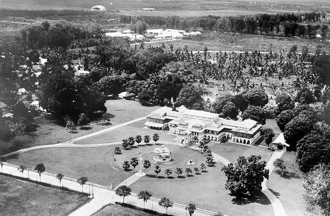
Sejarah Medan berawal dari sebuah kampung yang didirikan oleh Guru Patimpus di pertemuan Sungai Deli dan Sungai Babura.
Hari jadi Kota Medan ditetapkan pada 1 Juli 1590. Selanjutnya pada tahun 1632, Medan dijadikan pusat pemerintahan Kesultanan Deli, sebuah kerajaan Melayu.
Bangsa Eropa mulai menemukan Medan sejak kedatangan John Anderson dari Inggris pada tahun 1823. Peradaban di Medan terus berkembang hingga
Pemerintah Hindia Belanda memberikan status kota pada 1 April 1909 dan menjadikannya pusat pemerintahan Karesidenan Sumatra Timur. Memasuki abad ke-20,
Medan menjadi kota yang penting di luar Jawa, terutama setelah pemerintah kolonial membuka perusahaan perkebunan secara besar-besaran.
Geografis

Kota Medan memiliki luas 26.510 hektare (265,10 km²) atau 3,6% dari keseluruhan wilayah Sumatra Utara.
Dengan demikian, dibandingkan dengan kota/kabupaten lainya, Medan memiliki luas wilayah yang relatif kecil dengan jumlah penduduk yang relatif besar.
Secara geografis kota Medan terletak pada 3° 30' – 3° 43' Lintang Utara dan 98° 35' - 98° 44' Bujur Timur.
Untuk itu topografi kota Medan cenderung miring ke utara dan berada pada ketinggian 2,5 - 37,5 meter di atas permukaan laut.
Wisata Kuliner
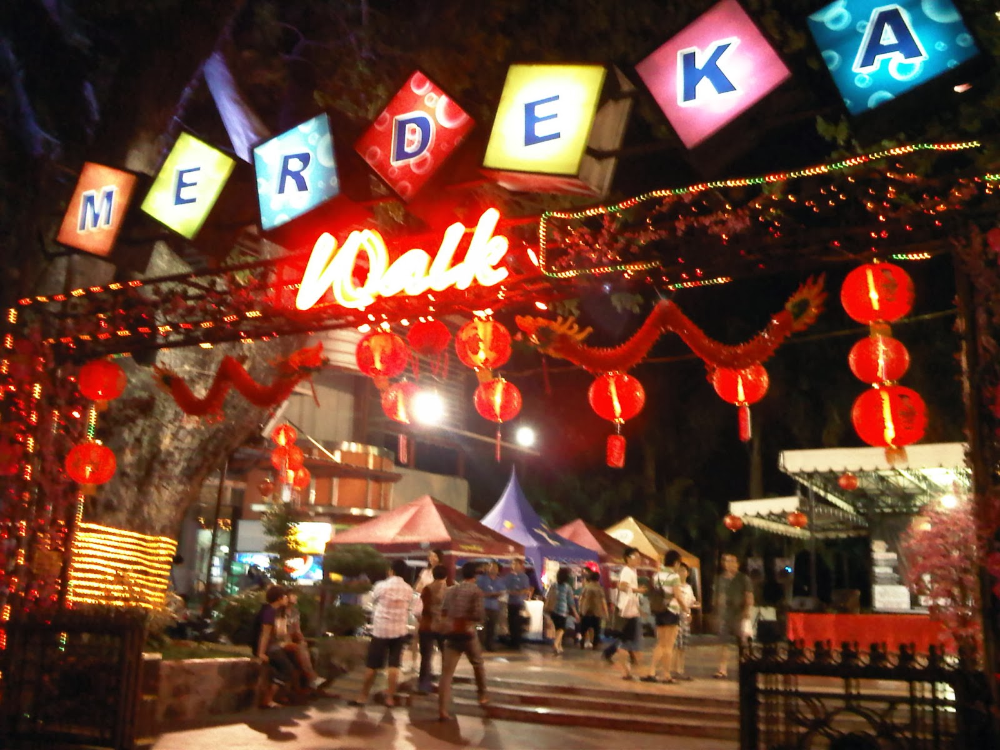
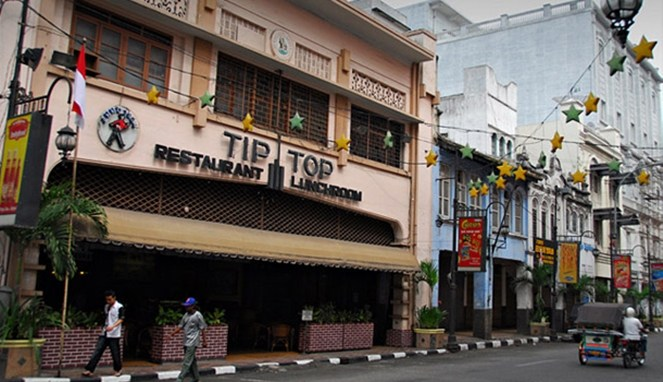
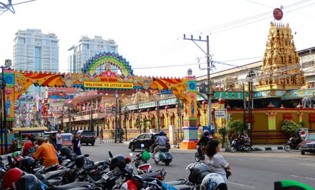
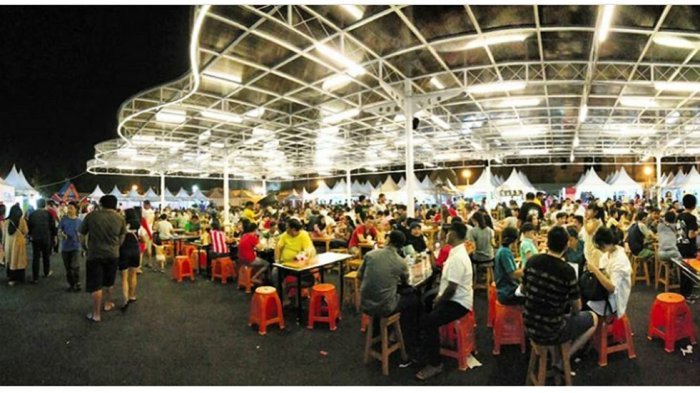
-Merdeka Walk, pusat jajanan 24 jam yang terletak di Lapangan Merdeka Medan dan tepat berada di seberang Balai Kota Lama Medan.
-Ramadhan Fair, khusus dibuka pada saat bulan Ramadhan terletak bersebelahan dengan Masjid Raya Medan.
-Kuliner Pagaruyung, masakan India dan Indonesia di daerah "Kampung Keling" ("Kampung Madras").
-Asia Mega Mas Food Court Centre (唐 人 街), Terletak di Kompleks Asia Mega Mas Medan.
-Pasar Merah Square, terletak di Jalan H.M. Jhoni, berdekatan dengan Kampus ITM dan UMSU.
-Amaliun Food Court, terletak di Jalan Amaliun, dekat dengan Yuki Simpang Raya.
-Medan Night Market by Fun Taste Street, terletak di Jalan Adam Malik Medan.
-Jalan Dr. Mansyur (Kampus USU), pilihan berbagai cafe yang menawarkan beragam hidangan.
-Jalan Semarang, masakan Tionghoa pada malam hari.
-Jalan Sumatera, terletak di Pandau Hulu I Kecamatan Medan Kota.
-Restoran Tip Top, Restoran yang dibangun pada zaman kolonial Belanda, terletak di Kesawan.
-Ucok Durian, Durian Sibolang.
Makanan Khas Medan
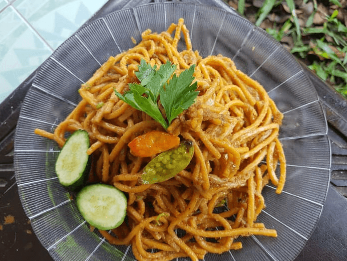
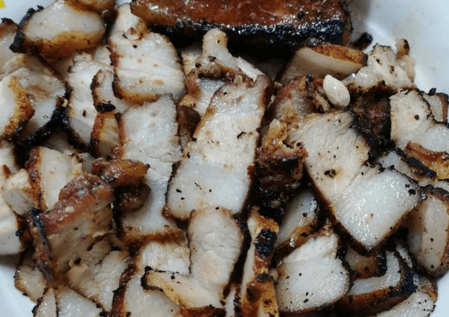
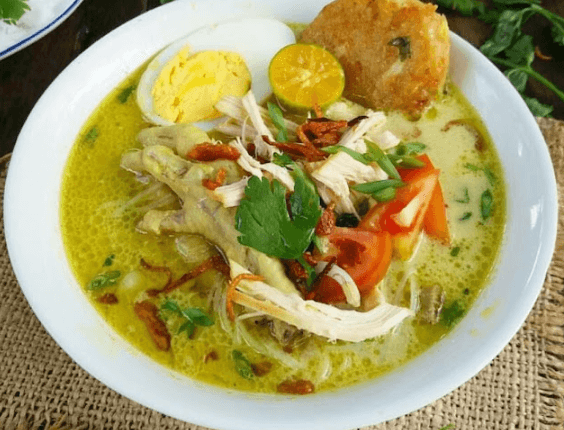
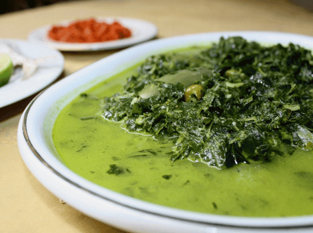
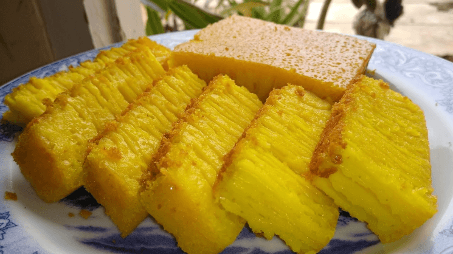
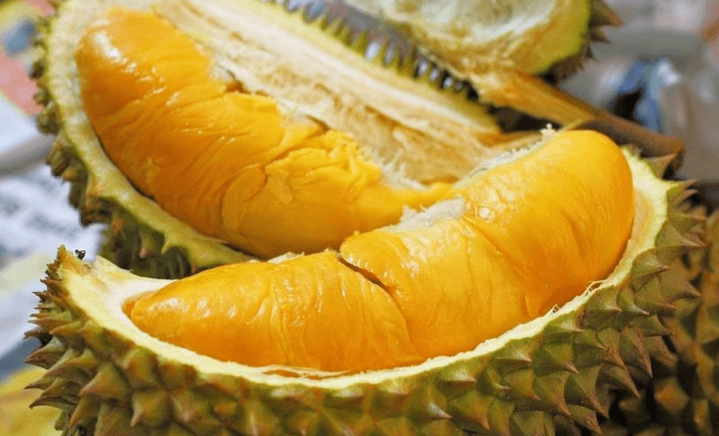
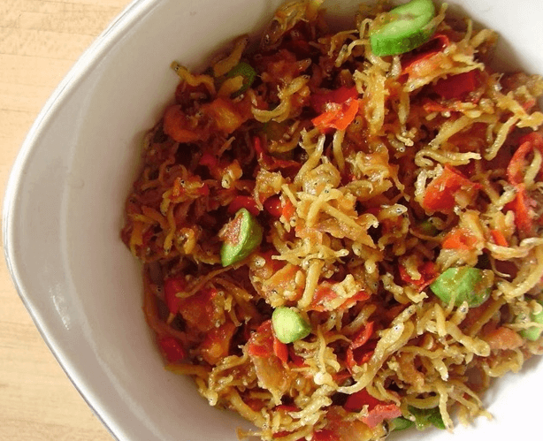
-Lontong Medan
-Mie Gomak
-Babi Panggang Karo
-Saksang
-Mie Aceh Medan
-Soto Medan
-Daun Ubi Tumbuk
-Bika Ambon
-Durian
-Ikan Teri Medan
-Lemang
-Kacang Sihobuk
-Sate Kerang
-Kue Ombus-ombus
-Kopi Sidikalang